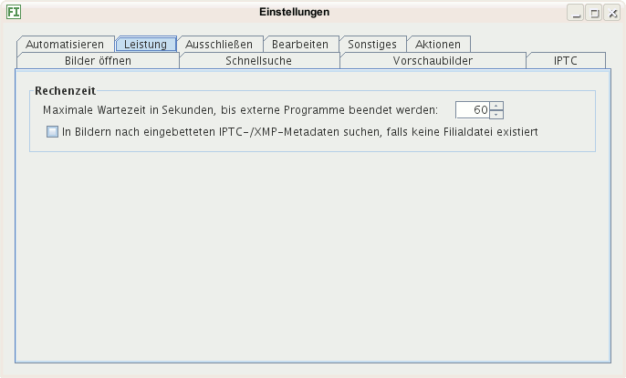

Hier geben Sie ein, nach wievielen Sekunden ein externes Programm beendet wird. Das ist von Belang, falls Sie die Vorschaubilder von einem externen Programm erzeugen lassen und eigene Skripte einsetzen zum Verarbeiten von Bildern. Sollte ein Programm nach dieser Zeit nicht fertig sein, wird es beendet.
Aktivieren Sie diese Option, falls zum Aktualisieren der Metadaten in der Datenbank in Bilddateien ohne XMP-Filialdatei nach eingebetteten XMP-Metadaten gesucht werden soll. Haben viele Bilder keine Filialdatei und keine eingebetteten XMP-Informationen, dauert das Aktualisieren der Datebank sehr lange, da alle Bilder komplett durchsucht werden. Wurden keine eingebettete XMP-Metadaten gefunden, wird darin nach IPTC-Daten gesucht, falls diese Option aktiviert ist. Hat ein Bild XMP-Informationen und stehen diese am Dateianfang, ist das Einlesen schnell, da nur so lange eingelesen wird, bis das Ende der XMP-Daten erreicht ist.
Aktivieren Sie diese Aktion nur, falls:
Aktivieren Sie diese Option nicht, falls Sie viele Bilder ohne Filialdateien haben und wenige mit eingebetteten XMP-Metadaten, da das Einlesen der Verzeichnisse unnötig verzögert wird.
Angezeigt werden unabhängig von dieser Option eingebettete IPTC-Metadaten immer und eingebettete XMP-Metadaten, falls keine Filialdatei existiert.
Ist diese Aktion deaktiviert, können Sie trotzdem eingebettete IPTC- und XMP-Metadaten in die Datenbank schreiben lassen:
Sie können auch Filialdateien erzeugen lassen aus eingebetteten XMP-Metadaten sowie aus eingebetteten IPTC-Metadaten.
Schließlich ist es möglich, diese Option ein- und auszuschalten vor dem Einlesen einzelner Ordner, falls in einigen Ordnern ohne Filialdateien viele Bilder mit eingebetteten XMP-Metadaten sind, in anderen nicht.
